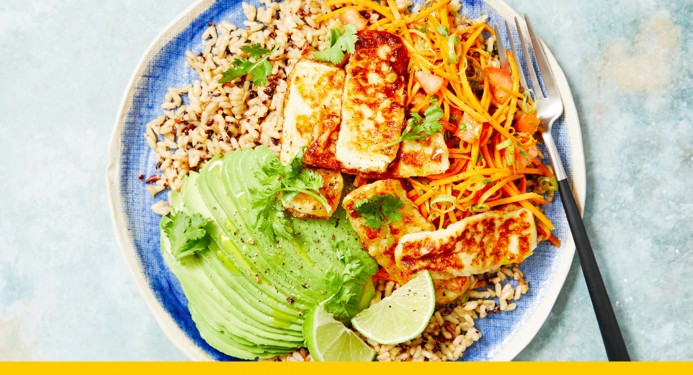

Mexican Haloumi Grain Platter with Shredded Salad, Avo and Lime

When you're hungry, you just want to come home to a dish that's got it all, just like this one. There's crunch from a raw, shredded salad, nutty grains, slices of rich avo and a lime- honey dressing. The crowning glory? Everyone's favourite squeaky cheese... haloumi.
Cook time:
30
Yield:
2
1 avocado240g brown rice blend180g haloumi 15g Mexican spice blend 21 lime1 spring onion, coriander1 tomato1 carrotWhat you'll require3 tsp olive oil1 tsp Australian honeyUtensilsmedium frypanjulienne peeler or box graterfine graterOur vegies come fresh from the farm, so please wash them before use.
1. Prepare salad vegetables.
Chewy, satisfying and sweet-salty, it's made even better with a light dusting of lively, Mexican spices.
2. Prepare ingredients.
Read through the recipe. Peel the carrot, then shred using a julienne peeler or coarsely grate with a box grater. Finely chop the tomato. Trim and finely chop the spring onion.
3. Make dressing.
Pick one-quarter of the coriander sprigs. Finely chop the remaining coriander leaves, discarding the stems. Finely grate the zest of half the lime, then juice the half. Cut the remaining lime into wedges.
4. Cook haloumi.
Combine the lime zest, lime juice, ½ tsp Mexican spice blend and 1 tsp honey in a large bowl. Season with salt and pepper.
5. Heat rice blend.
Cut three-quarters of the haloumi into 1cm- thick slices (see cooking tip). Heat 3 tsp olive oil in a medium frypan over medium- high heat. Cook the haloumi for 1-2 mins each side or until golden. Scatter ½ tsp Mexican spice blend* over the haloumi and toss to coat. Remove from the pan.
6. Get ready to serve.
Massage the packet of rice blend to loosen the grains, then add to the pan over high heat. Stir-fry, breaking up any lumps, for 1-2 mins, until heated through. Season with salt and pepper.